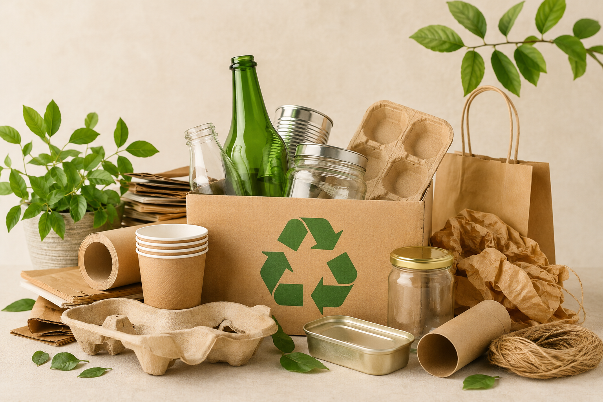

Conoce cómo nació EcoMarket y por qué creemos en un futuro más sostenible.

EcoMarket nació con la misión de facilitar el acceso a productos ecológicos y sostenibles que contribuyan al cuidado del medio ambiente. Creemos que cada pequeña acción cuenta y que las decisiones de compra pueden generar un impacto positivo en nuestro planeta.
Trabajamos junto a proveedores responsables que comparten nuestros valores de sostenibilidad, innovación y comercio justo. Seleccionamos cuidadosamente cada producto para ofrecer alternativas reutilizables, reciclables y de alta calidad.
Nuestro compromiso es inspirar un estilo de vida consciente, promoviendo el consumo responsable y construyendo, junto a nuestros clientes, un futuro más limpio, saludable y respetuoso con la naturaleza.
Reducimos el uso de materiales contaminantes.
Apoyamos productores responsables.
Promovemos la economía circular.
"Excelente calidad y excelente servicio."
Laura Gómez"Los productos llegaron muy rápido."
Carlos Pérez"Ahora compro todo ecológico."
Andrea Rojas